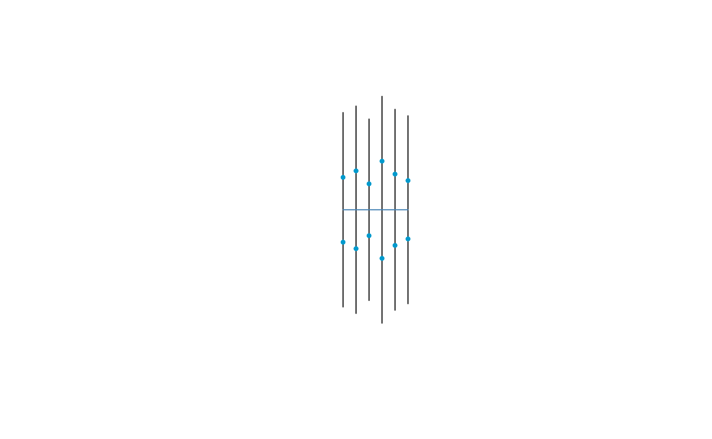
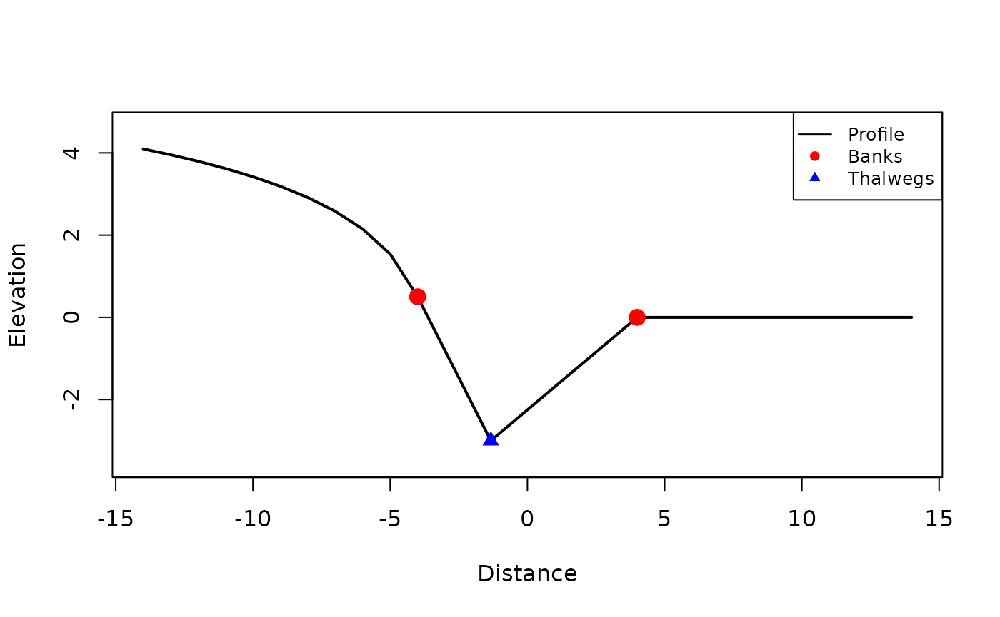
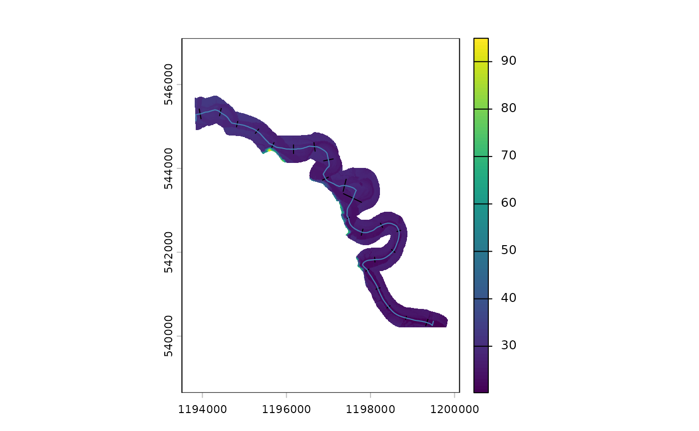
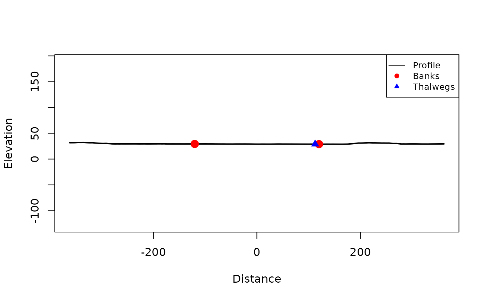
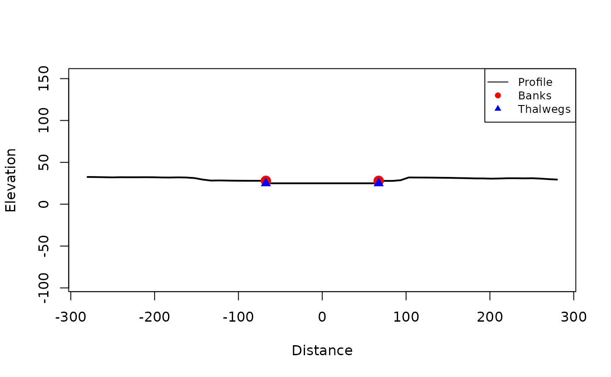
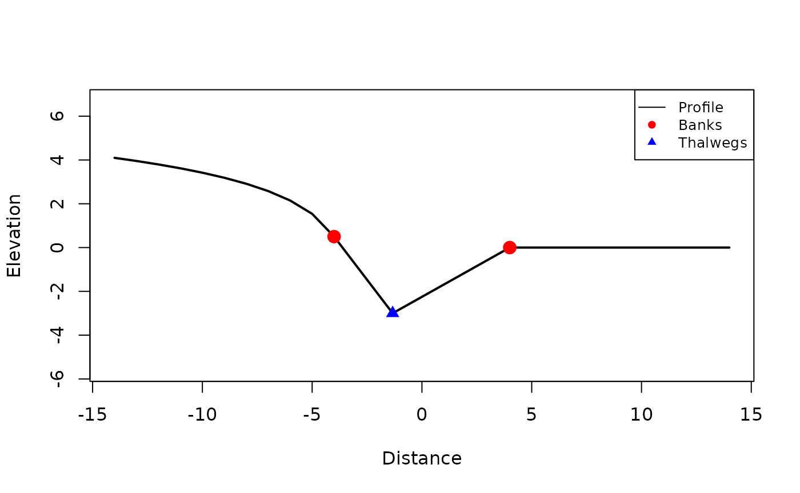
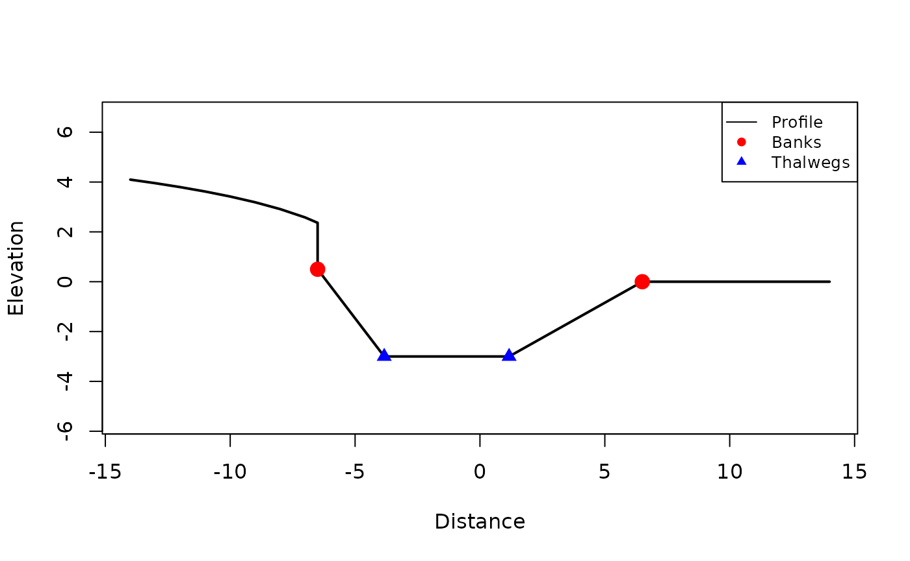
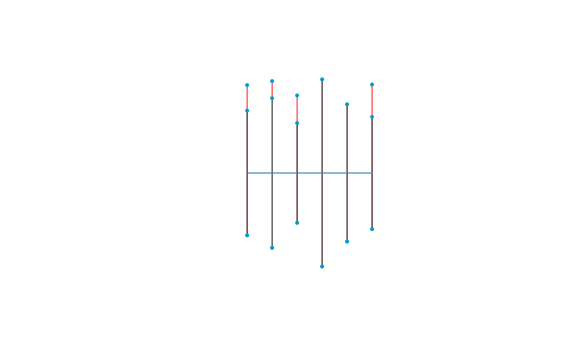

Channels with Profiles
2026-06-04
channels_with_profiles.RmdIf your workflow requires profile cross sections, xchan
allows this in addition to planimetric encoding. This vignette shows how
to create and work with profile-enabled channels. Since making a channel
with profiles first involves making a channel with planimetric
geometries, we recommend first reading the Getting Started with Channels
vignette.
There are two main ways of creating profile cross sections: by hand, and from a digital elevation model (DEM).
Creating Profiles by Hand
Creating profiles by hand is useful when a channel has been surveyed
and the profile data is available in a tabular format. The
profile_survey dataset is a toy example of such data.
head(profile_survey)
#> id distance elevation is_bank
#> 1 1 0 4.096843 FALSE
#> 2 1 1 3.953878 FALSE
#> 3 1 2 3.795837 FALSE
#> 4 1 3 3.619162 FALSE
#> 5 1 4 3.418865 FALSE
#> 6 1 5 3.187639 FALSENote the key features of this survey:
- The
idcolumn is the cross-section key, matching the order of the cross sections. - The
distancecolumn is the chord distance along the cross section, increasing from left bank toward right bank. - The
elevationcolumn is the elevation at each markeddistance. - The
is_bankcolumn is a logical flag indicating whether the vertex is a bank vertex. There must be an even number of these.
But before we can add profiles to a channel, we need to set the channel up with its planimetric arrangement. We’ll just consider a straight channel; at this point, there is no need to ensure that the channel width matches the survey.
channel <- xt_as_channel(rep(1, 6))
channel
#> xchan channel with 6 cross sections.
#> <xsection 1> 1 (-)
#> <xsection 2> 1 (-)
#> <xsection 3> 1 (-)
#> <xsection 4> 1 (-)
#> <xsection 5> 1 (-)
#> <xsection 6> 1 (-)Now we can add the profiles to the channel by specifying the required columns.
channel <- xt_add_profile(
channel,
distance = distance,
elevation = elevation,
section = id,
banks = is_bank,
data = profile_survey
)
channel
#> xchan channel with 6 cross sections.
#> <xsection 1> 10 m
#> <xsection 2> 12 m
#> <xsection 3> 8 m
#> <xsection 4> 15 m
#> <xsection 5> 11 m
#> <xsection 6> 9 m
#> With profile viewNote that the planimetric and profile arrangements are unlikely to have widths that match exactly. For this, the centerpoint of the planimetric and profile cross sections are aligned, and one set of banks are moved to the other set of banks. There are two options:
-
snap_banks_to = "profile": The planimetric banks snap to the profile banks. This is the default, because the survey is usually the more accurate source of information. -
snap_banks_to = "plan": The profile banks snap to the planimetric banks.
An important feature of profile-enabled cross sections is that they extend outside of the banks. Here is a planimetric view of the channel showing the full extent of the cross sections.
plot(channel, extent = "full")
Now it makes more sense to view individual cross sections. Grab an individual cross section by subsetting the channel list. Here is a view of the third cross section, with an exaggeration factor of 1.5.
section <- channel[[3]]
plot(section, extent = "full", exaggerate = 1.5)
When plotting cross sections, you can also choose to plot the
planimetric view with what = "plan".
Creating Profiles from Spatial Data
Sometimes LiDAR data is available in the form of a digital elevation model (DEM). This can be used to create profile cross sections.
LiDAR for the Squamish River comes shipped with the package as a DEM from the terra package. It needs to be unpacked first.
The Squamish DEM is LiDAR-derived and does not include submerged
bathymetry: sampling it alone yields profile cross sections with a flat
water surface at bank elevation rather than a channel. In the workflow
below we follow xt_generate_profile() with
xt_dredge_to() and a rectangular bathymetry specification
(bathy_rectangle(depth = 3)) to insert a synthetic 3 m deep
channel.
This can be used together with the river’s bankline polygon to first generate planimetric cross sections (as we did in the Getting Started with Channels vignette).
squamish <- xt_generate_plan(squamish_bankline, spacing = 500)
plot(squamish_dem)
plot(squamish, add = TRUE)
Now generate the profile cross sections with
xt_generate_profile(), using 10 m sample spacing.
squamish <- xt_generate_profile(squamish, squamish_dem, sample_freq =
10)Because the Squamish DEM has no bathymetry, insert a synthetic 3 m deep rectangular channel:
squamish <- xt_dredge_to(
squamish,
bathy = bathy_rectangle(depth = 3)
)
plot(squamish)
Take a look at the third cross section.
section <- xt_xsection_at(squamish, 3)
plot(section, extent = "full")
Channel Widening
Channel widening now also applies to the profile cross sections. Widen the toy channel from before by a range of widths:
channel_widened <- xt_widen(channel, dw = c(5, 3, 5, 0, 0, 4))
plot(channel_widened, col = "red")
plot(channel, add = TRUE)
For cross section profiles, this has the effect of shifting the between-channel topography on either side of the thalweg further from the thalweg, spreading out the channel bottom at the thalweg. Here is a before-and-after view of the third cross section.
sec <- xt_xsection_at(channel, 3)
sec_widened <- xt_xsection_at(channel_widened, 3)
plot(sec, extent = "full")
plot(sec_widened, extent = "full")
Since a profile view is available, there is not only erosion width but also erosion volume.
We can calculate the erosion volume resulting from the above width change:
head(xt_erosion_volume(channel, dw = c(5, 3, 5, 0, 0, 4)))
#> Units: [m^3]
#> [1] 8.991580 4.865745 18.991580 0.000000 0.000000 14.863680But we can also erode by volume; here is the resulting width change for the given cross-section-specific volume change (in squared units), this time allocating all volume erosion on the left side bank.
head(xt_erosion_width(channel, dv = c(5, 3, 10, 0, 0, 12), side =
"left"))
#> Units: [m]
#> [1] 2.043177 1.369570 2.218729 0.000000 0.000000 2.594431If there is not enough volume to erode, an error is thrown.
Go ahead and conduct the erosion.
channel_widened2 <- xt_widen(channel, dv = c(5, 3, 10, 0, 0, 12), side =
"left")
plot(channel_widened2, col = "red")
plot(channel, add = TRUE)
Get the new cross section widths.
Exporting Channels
With a profile encoding present, the channel can be exported according to its profiles, or in 3D.
The profile objects all appear overtop of each other:
The 3D encoding combines the profile and planimetric views to create a 3D arrangement. Use 3D plotting software like the rgl or plotly packages to view the 3D channel (not done here because these are not dependencies of the package).
xt_as_sfc(channel, what = "3d")
#> Geometry set for 6 features
#> Geometry type: MULTILINESTRING
#> Dimension: XYZ
#> Bounding box: xmin: 0 ymin: -7.5 xmax: 10 ymax: 7.5
#> z_range: zmin: -3 zmax: 0.5
#> CRS: NA
#> First 5 geometries:
#> MULTILINESTRING Z ((0 5 0.5, 0 1.666667 -1, 0 -...
#> MULTILINESTRING Z ((2 6 0.5, 2 2 -1, 2 -6 0))
#> MULTILINESTRING Z ((4 4 0.5, 4 1.333333 -3, 4 -...
#> MULTILINESTRING Z ((6 7.5 0.5, 6 2.5 -2, 6 -7.5...
#> MULTILINESTRING Z ((8 5.5 0.5, 8 1.833333 -2, 8...